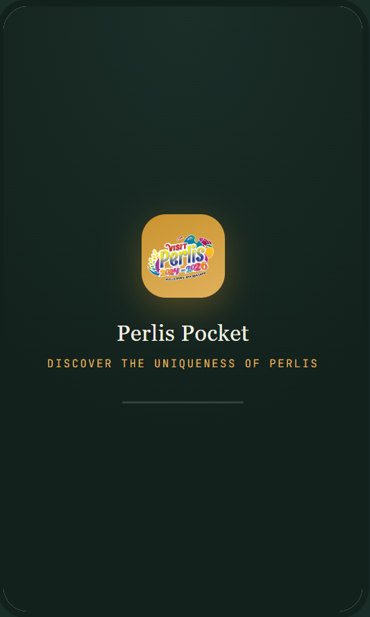
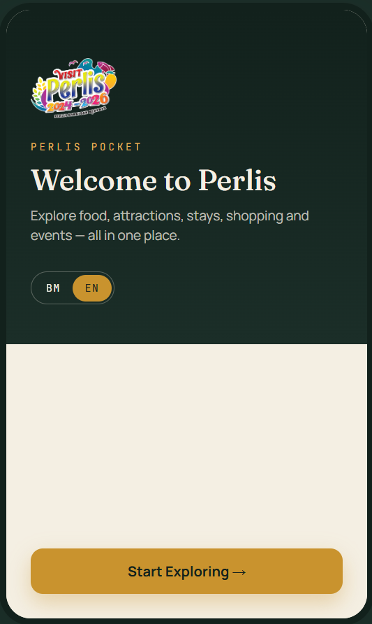
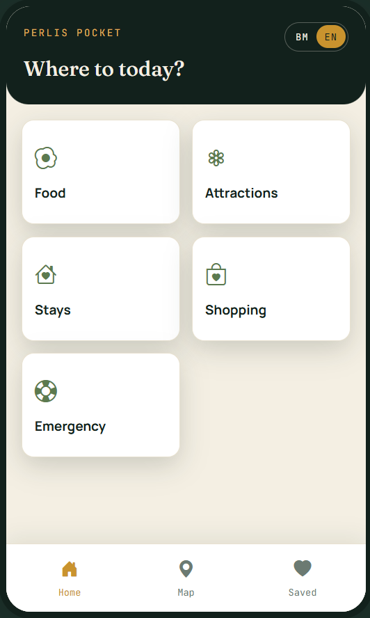
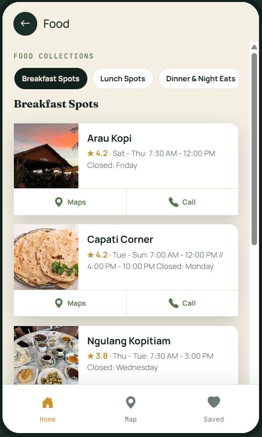
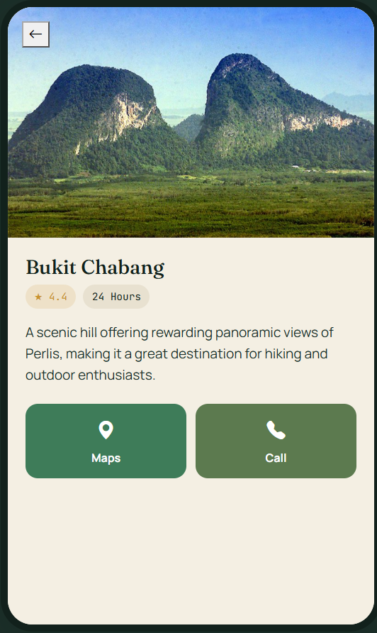
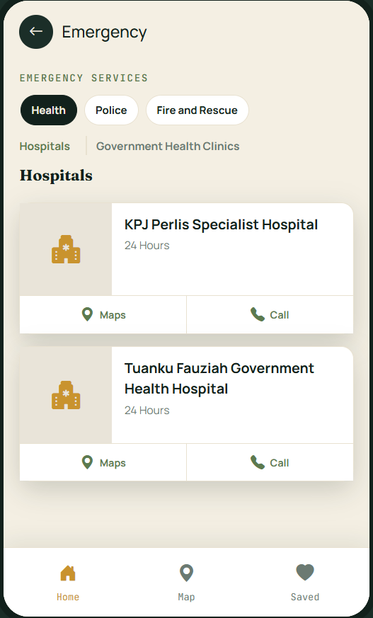

FREELANCE PROJECT
Interactive Tourism Progressive Web App
A Progressive Web App designed to provide visitors with accessible information about attractions, food, accommodation, shopping and local experiences in Perlis.
APPLICATION SCREENS
Selected screens from the Perlis Pocket Progressive Web App.

Landing Page

Home

Main Screen

Content

Content Details

Emergency Information Section
01 — OVERVIEW
Perlis Pocket is a Progressive Web App developed as an interactive digital tourism platform for Perlis. The application brings together information about attractions, food, accommodation, shopping, events and local experiences in one accessible platform.
02 — CHALLENGE
Tourism information can be spread across different sources, making it difficult for visitors to discover relevant places and experiences efficiently. The project aimed to provide a simple and interactive way for visitors to access tourism information through their mobile devices.
03 — SOLUTION
Perlis Pocket provides a mobile-friendly tourism experience accessible through a QR code. Users can explore destinations, discover food, view accommodation, browse shopping locations, save favourites and access important emergency information.
04 — FEATURES
Browse attractions, food, accommodation, shopping and local experiences.
Supports both Malay and English content for visitors.
Users can access the platform directly by scanning a QR code.
Provides information about hotels and homestays with direct link for booking.
Provides quick access to important healthcare, police and fire services.
05 — DEVELOPMENT
The application was developed as a lightweight Progressive Web App using HTML, CSS and vanilla JavaScript. Firebase was used to manage application data and hosting.
06 — MY ROLE
07 — TECHNOLOGY
08 — OUTCOME
Perlis Pocket demonstrates how a lightweight Progressive Web App can be used to deliver location-based tourism information through a mobile-friendly digital experience.